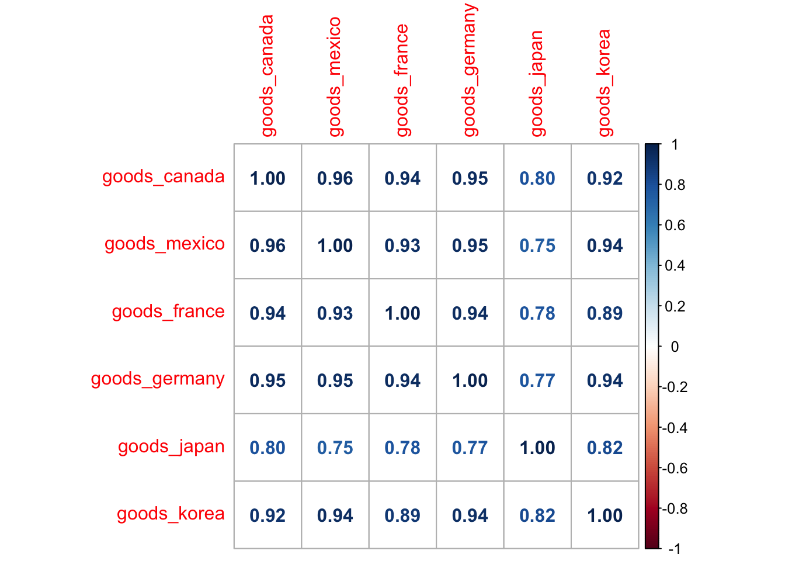

Chapter 5 Analysis and Results
5.1 The development process of U.S. export data from 1999 to 2021
5.1.1 Overall data of U.S. export of goods and services
In this part, we want to analyse the development process of U.S. export data.
Firstly, we want to see the trend of the U.S. export data on a general level, so we combine three data sets of overall export data of goods and exports to see such trend.

From the picture we can see that data on exports in general have been on an upward trend in both services and goods, with the exception of a few few years.
We speculate that the fall around 2001 and 2008 may be due to the global financial crisis, and the fall around 2020 may be due to the changes of trade policy towards China and the COVID-19.
5.1.2 Analysis of General merchandise in the exports of U.S.
General merchandise can be said to be the most important part of goods. It is closely related to people’s livelihood. Our research on general merchandise can reflect the living standard and quality of the American people to a certain extent.
Firstly we want to see the trend of exports of general merchandise and the proportion of general merchandise in goods.

From the picture we can see general merchandise accounts for almost all the proportion of goods, and the trend of general merchandise is almost the same as that of goods, that is to say, it is reasonable for us to analysis different types of general merchandise. This is what we want to next.
Now we want see the trend of the data of different types of general merchandise from 1999 to 2021.
And we also want to see if there exists some relationships between them.